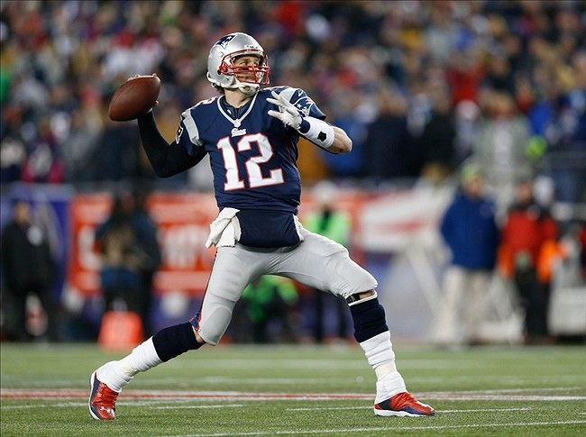
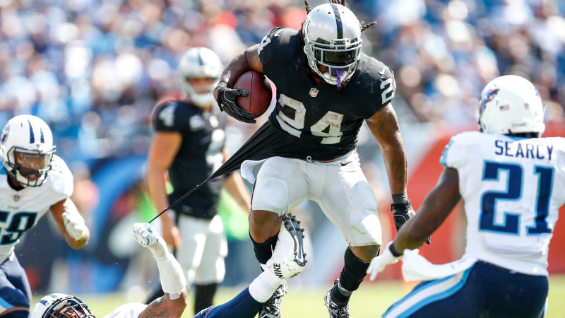
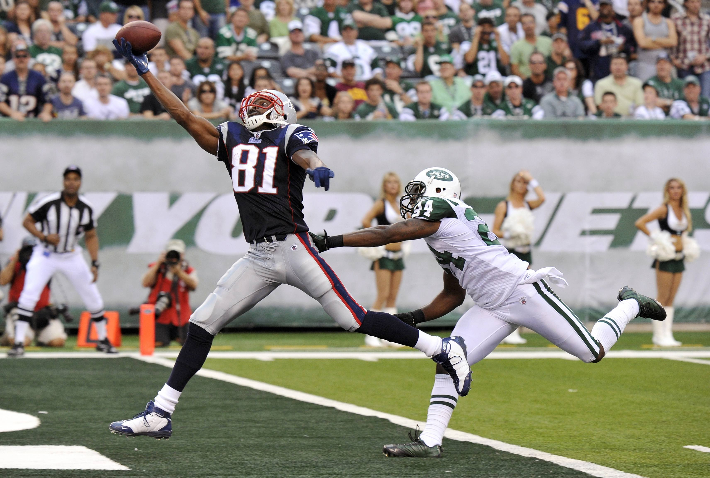

On this page I will go into detail about my favorite player at the quarterback, runningback and wide receiver positions.

My number one all time favorite NFL player is Tom Brady. I have watched Brady all my life and it was a true blessing watching the greatest quarterback of all time.
My favorite runningback would have to be Marshawn Lynch. After seeing his run vs the Saints its hard for him not to be my favorite. (I will link a video of the run at the bottom of the page.)
My all time favorite wide receiver would have to be the one and only Randy Moss. His hands, foot work and swagger makes Moss a one-of-a-kind.
